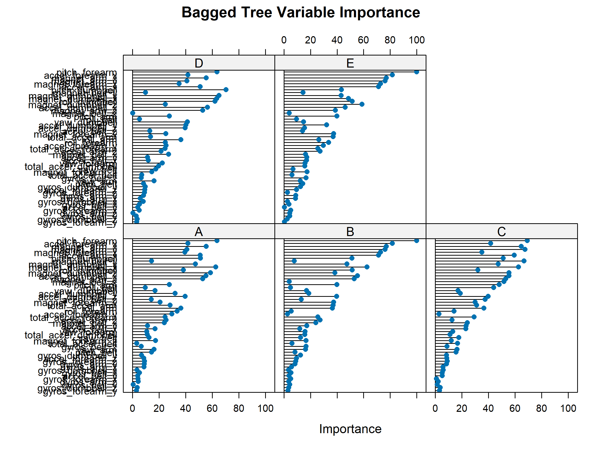
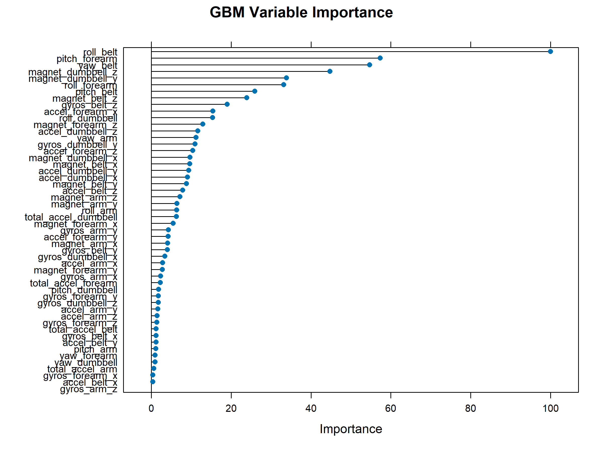
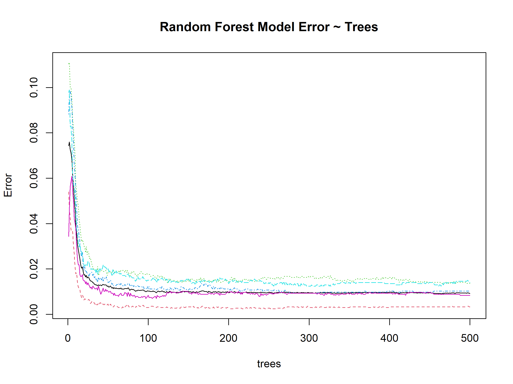
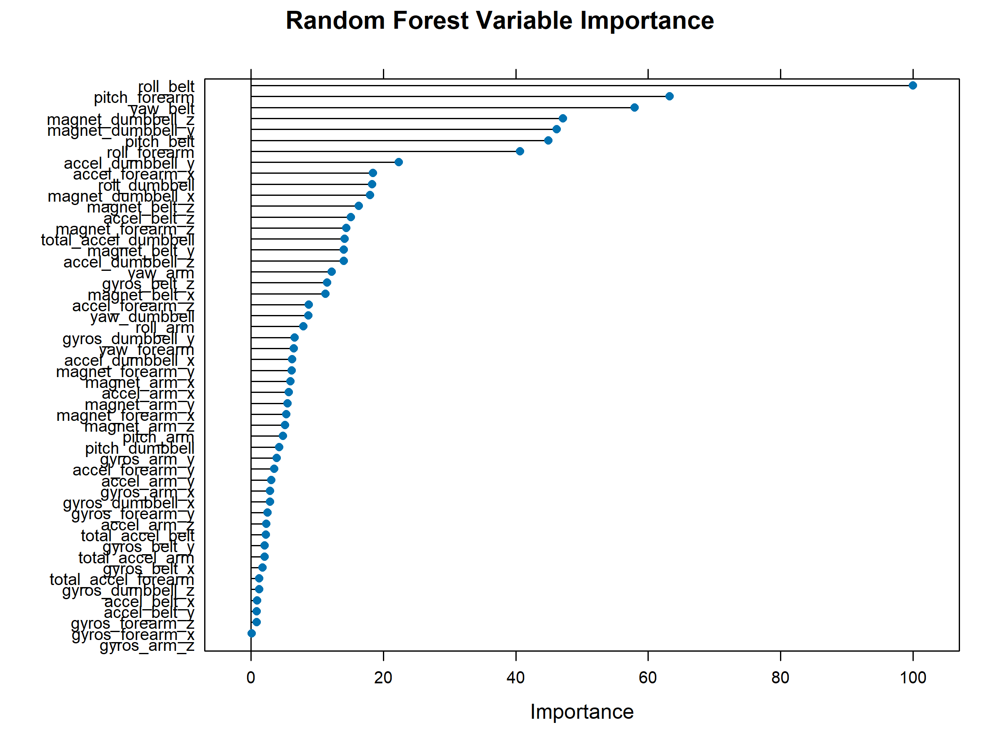

How You Lift Matters: Wearable Sensors Can Detect Exercise Form Errors with 99% Accuracy
Executive Summary
Problem: Fitness tracking technology typically measures whether people exercise but not how well they move. Poor exercise form is a leading cause of injury, yet wearable sensors are rarely used to distinguish correct technique from specific, identifiable mistakes in real time.
Approach: Accelerometer data from sensors strapped to participants’ belts, forearms, arms, and dumbbells were used to classify bicep curl form across five categories: one correct technique (Class A) and four defined errors (Classes B–E), including elbow flaring, incomplete range of motion, and excessive hip involvement. Four machine learning algorithms were compared – a decision tree, a bagged decision tree, a gradient boosted random forest, and a random forest – to identify which model best separates form classes and which sensor locations contribute most to accurate classification.
Insights: The random forest model achieved 99.4% accuracy with an out-of-sample error of just 0.6%, substantially outperforming the decision tree (49.7%) and demonstrating the power of ensemble methods for high-dimensional sensor classification. Accuracy peaked at 27 of 52 predictors rather than the full set, suggesting the model is over-parameterized and that a leaner deployment model is achievable with domain-informed feature selection.
Significance: As wearable fitness technology becomes more accessible, the ability to classify movement quality – not just movement quantity – opens the door to real-time coaching and injury prevention at scale. This project shows that a single well-tuned ensemble model can reliably distinguish between correct form and specific movement errors, which has direct application in consumer fitness devices and physical rehabilitation monitoring.
Key Findings
- The random forest model achieved 99.4% accuracy (95% CI: 99.2–99.5%) with a Kappa of 0.992, correctly classifying all five form categories.
- The decision tree performed at chance (49.7% accuracy) and failed to predict Class D (half-range lifting) entirely – a failure resolved completely by the random forest.
- Resampling methods consistently outperformed the single decision tree: the bagged tree reached 95.8% accuracy and the gradient boosted forest reached 96.3%.
- Model accuracy peaked at 27 predictors and declined at the full 52, indicating potential collinearity and a clear opportunity for feature reduction.
- Sensor location and predictor importance varied across models, suggesting that a minimal sensor deployment (fewer than four body locations) may be sufficient for accurate classification.
Research Question
Can wearable accelerometer sensors reliably distinguish between correct exercise form and specific, defined technique errors during bicep curls – and if so, which sensor locations and model types provide the most accurate classification?
Research Answers
The core question was whether machine learning models could differentiate not just whether someone exercised, but how well they moved. The answer depends entirely on the model chosen: a single decision tree cannot solve this problem, but ensemble methods can.
Decision Tree: Chance-Level Performance
The rpart decision tree achieved 49.7% accuracy – statistically indistinguishable from random guessing. Its most critical failure was a complete inability to predict Class D (half-range lifting), where sensitivity was undefined (NA) and prevalence was recorded as zero. Classes B and C also showed weak performance. This model is not fit for purpose.
Table 1. Confusion Matrix – Decision Tree (rpart)
| A | B | C | D | E | |
|---|---|---|---|---|---|
| A | 2032 | 41 | 154 | 0 | 5 |
| B | 624 | 525 | 369 | 0 | 0 |
| C | 646 | 33 | 689 | 0 | 0 |
| D | 577 | 244 | 465 | 0 | 0 |
| E | 211 | 191 | 383 | 0 | 657 |
Table 2. Performance Statistics by Class – Decision Tree (rpart)
| Statistic | A | B | C | D | E |
|---|---|---|---|---|---|
| Sensitivity | 0.497 | 0.508 | 0.335 | NA | 0.992 |
| Specificity | 0.947 | 0.854 | 0.883 | 0.836 | 0.891 |
| Pos Pred Value | 0.910 | 0.346 | 0.504 | NA | 0.456 |
| Neg Pred Value | 0.633 | 0.920 | 0.788 | NA | 0.999 |
| Prevalence | 0.521 | 0.132 | 0.263 | 0.000 | 0.084 |
| Detection Rate | 0.259 | 0.067 | 0.088 | 0.000 | 0.084 |
| Detection Prevalence | 0.284 | 0.194 | 0.174 | 0.164 | 0.184 |
| Balanced Accuracy | 0.722 | 0.681 | 0.609 | NA | 0.942 |
Interpretation: The decision tree’s failure to detect Class D at all reflects a fundamental limitation of single-tree classifiers on high-dimensional, correlated sensor data. The model lacks the variance-reduction mechanisms needed to separate visually similar movement patterns.
Resampling Recovers Performance
Resampling methods substantially recovered classification performance. The bagged tree – which averages multiple models produced by resampling – reached 95.8% accuracy (95% CI: 95.4–96.3%, Kappa: 0.947) and successfully predicted all five classes, with sensitivity ranging from 0.934 (Class C) to 0.982 (Class E).
Table 3. Confusion Matrix – Decision Tree (bag)
| A | B | C | D | E | |
|---|---|---|---|---|---|
| A | 2180 | 28 | 10 | 9 | 5 |
| B | 33 | 1429 | 36 | 11 | 9 |
| C | 2 | 47 | 1294 | 24 | 1 |
| D | 6 | 5 | 33 | 1231 | 11 |
| E | 5 | 18 | 13 | 22 | 1384 |
Table 4. Performance Statistics by Class – Decision Tree (bag)
| Statistic | A | B | C | D | E |
|---|---|---|---|---|---|
| Sensitivity | 0.979 | 0.936 | 0.934 | 0.949 | 0.982 |
| Specificity | 0.991 | 0.986 | 0.989 | 0.992 | 0.991 |
| Pos Pred Value | 0.977 | 0.941 | 0.946 | 0.957 | 0.960 |
| Neg Pred Value | 0.992 | 0.985 | 0.986 | 0.990 | 0.996 |
| Prevalence | 0.284 | 0.195 | 0.177 | 0.165 | 0.180 |
| Detection Rate | 0.278 | 0.182 | 0.165 | 0.157 | 0.176 |
| Detection Prevalence | 0.284 | 0.193 | 0.174 | 0.164 | 0.184 |
| Balanced Accuracy | 0.985 | 0.961 | 0.961 | 0.970 | 0.986 |
Figure 3. Variable Importance – Decision Tree (bag)

Interpretation: The jump from chance-level accuracy (rpart) to 95.8% (bag) using the same underlying data illustrates how variance reduction through resampling addresses the core weakness of single decision trees on noisy sensor data.
Gradient Boosting: Comparable to Bagging
The gradient boosted random forest reached 96.3% accuracy (95% CI: 95.9–96.7%, Kappa: 0.953), marginally above the bagged tree. Sensitivity across all five classes ranged from 0.934 (Class B) to 0.993 (Class E), with no class falling below the threshold for practical utility.
Table 5. Confusion Matrix – Random Forest (gbm)
| A | B | C | D | E | |
|---|---|---|---|---|---|
| A | 2187 | 34 | 6 | 5 | 0 |
| B | 49 | 1435 | 28 | 2 | 4 |
| C | 0 | 44 | 1299 | 22 | 3 |
| D | 0 | 10 | 28 | 1245 | 3 |
| E | 2 | 14 | 15 | 20 | 1391 |
Table 6. Performance Statistics by Class – Random Forest (gbm)
| Statistic | A | B | C | D | E |
|---|---|---|---|---|---|
| Sensitivity | 0.977 | 0.934 | 0.944 | 0.962 | 0.993 |
| Specificity | 0.992 | 0.987 | 0.989 | 0.994 | 0.992 |
| Pos Pred Value | 0.980 | 0.945 | 0.950 | 0.968 | 0.965 |
| Neg Pred Value | 0.991 | 0.984 | 0.988 | 0.993 | 0.998 |
| Prevalence | 0.285 | 0.196 | 0.175 | 0.165 | 0.179 |
| Detection Rate | 0.279 | 0.183 | 0.166 | 0.159 | 0.177 |
| Detection Prevalence | 0.284 | 0.193 | 0.174 | 0.164 | 0.184 |
| Balanced Accuracy | 0.985 | 0.960 | 0.967 | 0.978 | 0.992 |
Figure 4. Variable Importance – Random Forest (gbm)

Interpretation: Gradient boosting and bagging reached nearly identical accuracy, suggesting that for this dataset the primary performance driver is ensemble resampling itself rather than the specific weighting strategy used.
Random Forest: Best Model
The random forest model achieved the highest overall accuracy at 99.4% (95% CI: 99.2–99.5%, Kappa: 0.992), with sensitivity above 0.989 for all five classes. It is the recommended model for this classification task.
Table 7. Confusion Matrix – Random Forest
| A | B | C | D | E | |
|---|---|---|---|---|---|
| A | 2228 | 3 | 1 | 0 | 0 |
| B | 13 | 1503 | 2 | 0 | 0 |
| C | 0 | 4 | 1357 | 7 | 0 |
| D | 0 | 1 | 9 | 1276 | 0 |
| E | 0 | 0 | 3 | 7 | 1432 |
Table 8. Performance Statistics by Class – Random Forest
| Statistic | A | B | C | D | E |
|---|---|---|---|---|---|
| Sensitivity | 0.994 | 0.995 | 0.989 | 0.989 | 1.000 |
| Specificity | 0.999 | 0.998 | 0.998 | 0.998 | 0.998 |
| Pos Pred Value | 0.998 | 0.990 | 0.992 | 0.992 | 0.993 |
| Neg Pred Value | 0.998 | 0.999 | 0.998 | 0.998 | 1.000 |
| Prevalence | 0.286 | 0.193 | 0.175 | 0.164 | 0.183 |
| Detection Rate | 0.284 | 0.192 | 0.173 | 0.163 | 0.183 |
| Detection Prevalence | 0.284 | 0.193 | 0.174 | 0.164 | 0.184 |
| Balanced Accuracy | 0.997 | 0.996 | 0.994 | 0.994 | 0.999 |
Figure 1. Random Forest Model Error by Number of Trees

Interpretation: Model error declines rapidly through the first 100 trees and stabilizes around 200, indicating convergence. Each line represents one of the five form classes (A–E). The plateau after ~200 trees confirms that additional trees do not improve performance and that a smaller forest could be used in a leaner deployment.
Figure 2. Variable Importance – Random Forest

Interpretation: Variable importance identifies the sensor readings most responsible for accurate classification. Accuracy peaks at 27 of 52 predictors – the model does not benefit from the full predictor set. Collinear predictors may be inflating apparent accuracy; weighting or removing correlated variables is a recommended next step. Domain expertise in exercise physiology would be valuable in determining which of the top predictors reflect biomechanically meaningful signals.
Next Steps
- Feature reduction: Conduct a collinearity analysis on the 52 predictors. Collinear variables can inflate apparent accuracy; weighting or removing them would produce a leaner, more honest model.
- Sensor minimization: Examine whether the top-ranked predictors cluster on specific body locations. If so, a simpler single-sensor or dual-sensor deployment may be sufficient for reliable classification.
- Domain validation: Collaborate with an exercise physiologist to evaluate whether the most important predictors correspond to biomechanically meaningful movement signals or are sensor artifacts.
- Deployment testing: Evaluate whether accuracy holds under real-world conditions – varied populations, fatigue, different dumbbell weights – before considering integration into consumer fitness technology.
Study Design
Data Source: The Weight Lifting Exercise Dataset was collected by Velloso et al. (2013) as part of the Human Activity Recognition project at the Pontifical Catholic University of Rio de Janeiro. Sensors were strapped to participants’ belts, forearms, upper arms, and dumbbells during supervised bicep curl sessions. Participants performed the exercise in one correct form and four defined incorrect forms under expert supervision. Training and test datasets are publicly available.
Data Handling: Variables unrelated to exercise performance (participant ID, timestamps, window metadata) were removed from both training and test sets. Variables with high proportions of missing values were excluded, leaving 52 predictors from the original feature set. The outcome variable (classe) identifies form category: A (correct), B (elbows forward), C (halfway up), D (halfway down), E (hips forward).
Analytical Approach:
- Data partitioned 60/40 into training and test sets using stratified random sampling on classe.
- Four models trained using the caret package with 5-fold cross-validation via trainControl: decision tree (rpart), bagged decision tree (bag), gradient boosted random forest (gbm), and random forest (rf).
- Each model evaluated on the held-out test set using confusionMatrix: overall accuracy, Kappa, and per-class sensitivity and specificity.
- Variable importance extracted for all models to identify top predictors.
- Random forest accuracy evaluated across predictor counts (2 to 52) to identify the optimal predictor subset.
Project Resources
Repository: github.com/kchoover14/ml-lift-better
Data: Training and test datasets from the Weight Lifting Exercise Dataset (Velloso et al., 2013), publicly available. Not included in this repository.
Code:
ml-lift-better.R– data cleaning, partitioning, model training, and figure export for all four classifiers
Project Artifacts:
- Figures (n=4): variable importance plots for all models; random forest error by tree count
Environment:
renv.lockandrenv/– restore withrenv::restore()
License:
- Code and scripts © Kara C. Hoover, licensed under the MIT License.
- Data, figures, and written content © Kara C. Hoover, licensed under CC BY-NC-SA 4.0.
Tools & Technologies
Languages: R
Tools: caret | renv
Packages: dplyr | ggplot2 | GGally | caret | rattle | party | rpart.plot | randomForest | gbm
Expertise
Domain Expertise: machine learning | classification | ensemble methods | wearable sensor data | model evaluation
Transferable Expertise: Demonstrates ability to select and compare competing model types, diagnose failure modes in underperforming algorithms, and translate classification results into actionable deployment recommendations for applied technology contexts.